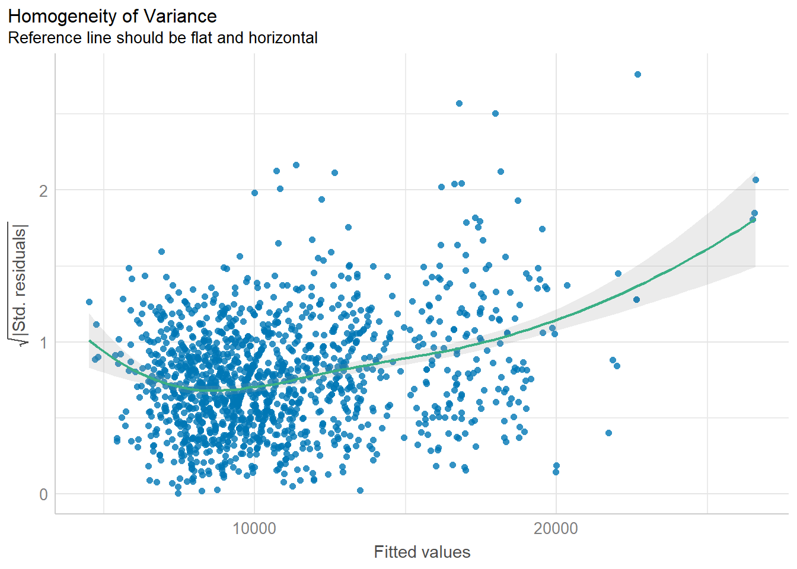

pacman::p_load(ggdist, ggridges, tidyverse,
ggthemes,colorspace)Hands-on Exercise 4: Fundamentals Statistics of Visual Analytics
1. Roadmap for Studying
2. Visualize Distribution
2.1 Getting Started
2.1.1 Install and Load R packages
tidyverse for data science process
ggridges a ggplot2 extension specially designed for plotting ridgeline plots
ggdist for visualising distribution and uncertainty
2.1.2 Import data
Exam_data.csv will be used in this exercise.
exam <- read_csv("data/Exam_data.csv")2.2 Visualize Distribution with Ridgeline Plot
Ridgeline plot(also called Joyplot): for revealing the distribution of a numeric value for several groups
is used when the number of group is large
is used when the number of group to represent is medium to high
use space more efficiently
is used when there is a clear pattern in the result, an obvious ranking in groups
2.2.1 ggridges package
geom_ridgeline(): creates plots that look like a series of mountain ridges. creates a line that represents the density of the distribution of your data.
geom_density_ridges(): In addition to what
geom_ridgeline()does,geom_density_ridges()adds a shaded area under the lines, which represents the same density information in a more visually filled way
The ridgeline plot below is plotted by using geom_density_ridges()
ggplot(exam,
aes(x=ENGLISH,
y=CLASS))+
geom_density_ridges(
scale=3,
rel_min_height=0.01,
bandwidth=3.4,
fill=lighten("#7097BB",.3),
color="white"
)+
scale_x_continuous(
name="English grades",
expand=c(0,0)
)+
scale_y_discrete(name=NULL,
expand=expansion(add=c(0.2,2.6)))+
theme_ridges()
2.2.2 Change fill colors
geom_ridgeline_gradient(): make the area under a ridgeline filled with colors that vary in some form along the x axis (do not allow for alpha transparency in the fill)
geom_density_ridges_gradient(): make the area under a ridgeline filled with colors that vary in some form along the x axis (do not allow for alpha transparency in the fill)
ggplot(exam,
aes(x=ENGLISH,
y=CLASS,
fill=stat(x)))+
geom_density_ridges_gradient(
scale=3,
rel_min_height=0.01)+
scale_fill_viridis_c(name="Temp. [F]",
option="C")+
scale_x_continuous(
name="English grades",
expand=c(0,0))+
scale_y_discrete(name=NULL,
expand=expansion(add=c(0.2,2.6)))+
theme_ridges()
2.2.3 Map the probabilities onto color
- stat_density_ridges(): provides a stat function
ggplot(exam,
aes(x=ENGLISH,
y=CLASS,
fill=0.5-abs(0.5-stat(ecdf))))+
stat_density_ridges(geom="density_ridges_gradient",
calc_ecdf=TRUE)+
scale_fill_viridis_c(name="Tail probability",
direction = -1)+
theme_ridges()
2.2.4 Add quantile lines to ridgeline plots
ggplot(exam,
aes(x = ENGLISH,
y = CLASS,
fill = factor(stat(quantile))
)) +
stat_density_ridges(
geom = "density_ridges_gradient",
calc_ecdf = TRUE,
quantiles = 4,
quantile_lines = TRUE) +
scale_fill_viridis_d(name = "Quartiles") +
theme_ridges()
Instead of using number to define the quantiles, we can also specify quantiles by cut points such as 2.5% and 97.5% tails to colour the ridgeline plot as shown in the figure below.
ggplot(exam,
aes(x=ENGLISH,
y=CLASS,
fill=factor(stat(quantile))))+
stat_density_ridges(
geom="density_ridges_gradient",
calc_ecdf=TRUE,
quantiles=c(0.025,0.975))+
scale_fill_manual(
name="Probability",
values=c("#FF0000A0", "#A0A0A0A0", "#0000FFA0"),
labels=c("(0, 0.025]", "(0.025, 0.975]", "(0.975, 1]"))+
theme_ridges()
2.3 Visualize Distribution with Raincloud Plot
Raincloud Plot produces a half-density to a distribution plot.
- used to compare the distribution of a continuous variable in terms of different groups
- highlight multiple modalities (an indicator that groups may exist)
2.3.1 Plot a Half Eye graph
- stat_halfeye(): produces a Half Eye visualization, which is contains a half-density and a slab-interval.
ggplot(exam,
aes(x=RACE,
y=ENGLISH))+
stat_halfeye(adjust=0.5,
justification=-0.2,
.width=0,
point_colour=NA)
2.3.2 Add the boxplot with geom_boxplot()
ggplot(exam,
aes(x=RACE,
y=ENGLISH))+
stat_halfeye(adjust=0.5,
justification=-0.2,
.width=0,
point_colour=NA)+
geom_boxplot(width=.20,
outlier.shape=NA)
2.3.3 Add the dot plot with geom_dots()
- stat_dots(): produces a half-dotplot, which is similar to a histogram that indicates the number of data points in each bin
ggplot(exam,
aes(x=RACE,
y=ENGLISH))+
stat_halfeye(adjust=0.5,
justification=-0.2,
.width=0,
point_colour=NA)+
geom_boxplot(width=.20,
outlier.shape=NA)+
stat_dots(side="left",
justification=1.2,
binwidth=.5,
dotsize=2)
2.3.4 Flip horizontally
ggplot(exam,
aes(x=RACE,
y=ENGLISH))+
stat_halfeye(adjust=0.5,
justification=-0.2,
.width=0,
point_colour=NA)+
geom_boxplot(width=.20,
outlier.shape=NA)+
stat_dots(side="left",
justification=1.2,
binwidth=.5,
dotsize=2)+
coord_flip()+
theme_economist()
3. Visual Statistical Analysis
3.1 Getting Started
3.1.1 Install and Launch R package
- ggstatsplot: create graphics with details from statistical tests included in the information-rich plots themselves
pacman::p_load(ggstatsplot, tidyverse)3.1.2 Import Data
exam <- read.csv("Data/Exam_data.csv")3.2 One-sample test: gghistostats() method
set.seed(1234)
gghistostats(
data=exam,
x=ENGLISH,
type="bayes",
test.value=60,
xlab="English scores"
)
3.3 Bayes Factor
A Bayes factor is the ratio (positive number) of the likelihood of one particular hypothesis to the likelihood of another. It can be interpreted as a measure of the strength of evidence in favor of one theory among two competing theories
Example:
- You have two competing options or hypotheses. Let’s call them Option A and Option B.
- You collect some data or evidence. The Bayes Factor helps you assess how well the data supports Option A versus Option B.
- The Bayes Factor gives you a ratio. If the Bayes Factor is greater than 1, it means the data supports Option A more than Option B. If it’s less than 1, it means the data supports Option B more than Option A.
- The bigger the Bayes Factor, the stronger the evidence in favor of one option. A Bayes Factor of 10 means the data strongly supports one option over the other.
- The smaller the Bayes Factor, the weaker the evidence. A Bayes Factor of 0.1 means the data weakly supports one option over the other.
3.4 Two-sample mean test: ggbetweenstats() method
ggbetweenstats(
data=exam,
x=GENDER,
y=MATHS,
type="np",
message=FALSE
)
3.5 Oneway ANOVA test: ggbetweenstats() method
ggbetweenstats(
data=exam,
x=RACE,
y=ENGLISH,
type="p",
mean.ci=TRUE,
pairwise.comparisons=TRUE,
pairwise.display = "s",
pairwise.method="fdr",
messages=FALSE
)3.6 Significant test of Correlation: ggscatterstats()
ggscatterstats(
data=exam,
x=MATHS,
y=ENGLISH,
marginal=TRUE
)
3.7 Significant test of Association: ggbarstats()
- data wrangling: the Maths scores is binned into a 4-class variable by using
cut()
exam1 <- exam %>%
mutate(MATHS_bins =
cut(MATHS,
breaks = c(0,60,75,85,100)))- Association test
ggbarstats(exam1,
x=MATHS_bins,
y=GENDER)
4. Visualize model diagnostic and model parameters
4.1 Getting Started
4.1.1 Install and load R packages
performance: for assessing and checking the quality of statistical models. It contains functions for computing various performance metrics, model diagnostics, and checks for regression models, among others.
parameters: for processing the parameters of statistical models. It provides functions to summarize, manipulate, and plot model parameters and supports a wide range of models.
see: to create plots and visualizations for statistical models and data structures. It works well with the
performanceandparameterspackages, among others, to create attractive and informative plots.
pacman::p_load(readxl,performance,parameters,see)4.1.2 Import Data
car_resale <- read_xls("Data/ToyotaCorolla.xls","data")
car_resale# A tibble: 1,436 × 38
Id Model Price Age_08_04 Mfg_Month Mfg_Year KM Quarterly_Tax Weight
<dbl> <chr> <dbl> <dbl> <dbl> <dbl> <dbl> <dbl> <dbl>
1 81 TOYOTA … 18950 25 8 2002 20019 100 1180
2 1 TOYOTA … 13500 23 10 2002 46986 210 1165
3 2 TOYOTA … 13750 23 10 2002 72937 210 1165
4 3 TOYOTA… 13950 24 9 2002 41711 210 1165
5 4 TOYOTA … 14950 26 7 2002 48000 210 1165
6 5 TOYOTA … 13750 30 3 2002 38500 210 1170
7 6 TOYOTA … 12950 32 1 2002 61000 210 1170
8 7 TOYOTA… 16900 27 6 2002 94612 210 1245
9 8 TOYOTA … 18600 30 3 2002 75889 210 1245
10 44 TOYOTA … 16950 27 6 2002 110404 234 1255
# ℹ 1,426 more rows
# ℹ 29 more variables: Guarantee_Period <dbl>, HP_Bin <chr>, CC_bin <chr>,
# Doors <dbl>, Gears <dbl>, Cylinders <dbl>, Fuel_Type <chr>, Color <chr>,
# Met_Color <dbl>, Automatic <dbl>, Mfr_Guarantee <dbl>,
# BOVAG_Guarantee <dbl>, ABS <dbl>, Airbag_1 <dbl>, Airbag_2 <dbl>,
# Airco <dbl>, Automatic_airco <dbl>, Boardcomputer <dbl>, CD_Player <dbl>,
# Central_Lock <dbl>, Powered_Windows <dbl>, Power_Steering <dbl>, …4.2 Build Multiple Regression Model using lm()
model <- lm(Price ~ Age_08_04 + Mfg_Year + KM + Weight + Guarantee_Period, data = car_resale)
model
Call:
lm(formula = Price ~ Age_08_04 + Mfg_Year + KM + Weight + Guarantee_Period,
data = car_resale)
Coefficients:
(Intercept) Age_08_04 Mfg_Year KM
-2.637e+06 -1.409e+01 1.315e+03 -2.323e-02
Weight Guarantee_Period
1.903e+01 2.770e+01 The output equation is: Price = -14.09Age_08_04+1315Mfg_Year-232.3KM+19.03Weight+27.7Guarantee_Period
4.3 Model Diagnostic: check multicolinearity
Multicolinearity: several independent varaiables in a model are correlated
check_collinearity(model)# Check for Multicollinearity
Low Correlation
Term VIF VIF 95% CI Increased SE Tolerance Tolerance 95% CI
KM 1.46 [ 1.37, 1.57] 1.21 0.68 [0.64, 0.73]
Weight 1.41 [ 1.32, 1.51] 1.19 0.71 [0.66, 0.76]
Guarantee_Period 1.04 [ 1.01, 1.17] 1.02 0.97 [0.86, 0.99]
High Correlation
Term VIF VIF 95% CI Increased SE Tolerance Tolerance 95% CI
Age_08_04 31.07 [28.08, 34.38] 5.57 0.03 [0.03, 0.04]
Mfg_Year 31.16 [28.16, 34.48] 5.58 0.03 [0.03, 0.04]Plot the collinearity in terms of VIF
check_c <- check_collinearity(model)
plot(check_c)
4.4 Model Diagnostic: Check normality assumption
Normality assumption: when performing statistical tests that rely on the assumption of normally distributed residuals (like t-tests for coefficients), it is required to check if the data points follow a standard normal distribution in advance.
model1 <- lm(Price ~ Age_08_04+KM+Weight+Guarantee_Period,
data=car_resale)
check_n <- check_normality(model1)
plot(check_n)
4.5 Model Diagnostic: Check homogeneity of variances
homogeneity of variances means “equal spread” or “equal variability” of different groups. It refers to the consistency of the spread or variance of the residuals across all levels of the independent variables.
when you are doing an experiment or a study, you often want to make sure that the groups you are comparing are similar in terms of how spread out their data is. If one group has data that is all over the place and another group’s data is very tightly packed, it could be a problem for certain types of statistical tests which assume that the variances are equal across all groups being compared.
Example:
Imagine you’re trying to predict the scores of students on a math test using the number of hours they studied. After everyone takes the test, you compare your predictions to the actual scores—the differences are called “residuals.”
If your predictions are equally reliable for students who studied a little and students who studied a lot, then the spread of those residuals will be pretty consistent. This is like saying whether a student studied for 2 hours or 10 hours, your prediction might be off by about 3 points on average either way. This consistency in prediction error is what we mean by “homogeneity of variance.”
If you notice that for students who studied a little, your predictions are really close, but for students who studied a lot, your predictions are way off—maybe you’re underestimating their scores. This means the spread of the residuals isn’t consistent. For those who studied a little, the residuals are small and clustered close together. For those who studied a lot, the residuals are large and spread out. This inconsistency is what we’d call “heteroscedasticity.”
“homogeneity of variance” means your prediction mistakes are about the same size no matter how much someone studied. If that’s not the case, and your mistakes vary a lot depending on how much they studied, then there’s a problem with “heteroscedasticity”.
Reasons for heteroscedasticity:
- Non-Linear Relationship: The relationship between study time and scores isn’t straight-line (linear).
- Missing Factors: There could be other factors that affect scores in addition to study time.
- Study Time Measurement: Perhaps “study time” isn’t measured in the best way. For example, just counting hours might not take into account the quality of the study.
- Extreme Values: There might be students with very high or very low study times that are affecting the prediction errors. These could be outliers, and they might need special attention in your analysis.
- Incorrect Model: You might be using the wrong type of model to make your predictions. Maybe the relationship between study time and scores is more complex than the model you’re using can handle.
check_h <- check_heteroscedasticity(model1)
plot(check_h)
4.6 Model Diagnostic: Complete check
To create a composite checks on a statistical model.
check_model(model1)4.7 Visualize Regression Parameters: see methods
To display the point estimates and confidence intervals of the parameters (coefficients) from a statistical model.
plot(parameters(model1))
4.8 Visualize Regression Parameters: ggcoefstats() methods
pacman::p_load(ggstatsplot)
ggcoefstats(model1, output="plot")